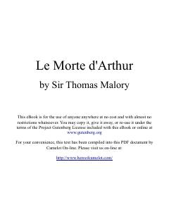

LMQirol Artur va dumaloq stol ritsarlarining afsonaviy sarguzashtlari haqidagi klassik asar.
Ushbu asar Qirol Artur va dumaloq stol ritsarlarining sarguzashtlari, ularning g'alabalari hamda fojiali qulashi haqida hikoya qiluvchi ingliz adabiyotining klassik eposidir. Kitobda Camelot saltanati, sehrgar Merlin, Lanslot va Gvinevra munosabatlari hamda Grail (Muqaddas qadah) izlanishlari batafsil yoritilgan.